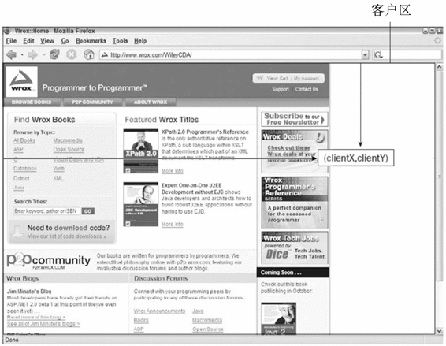
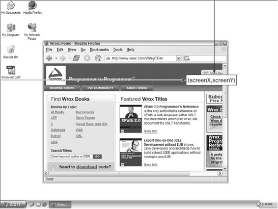
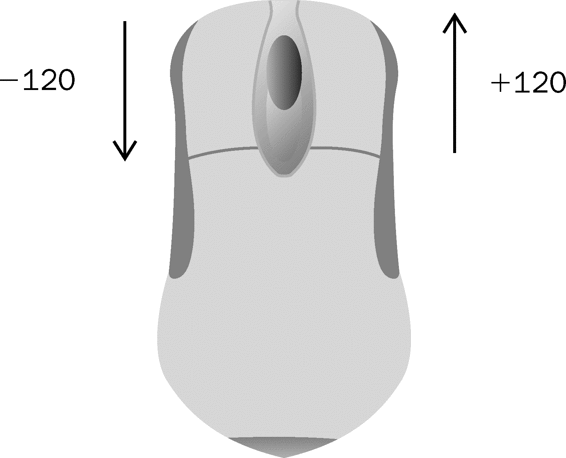
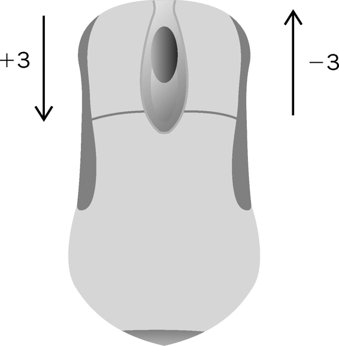
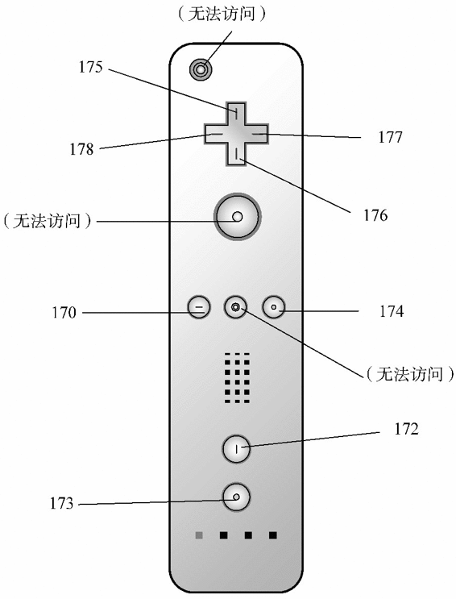
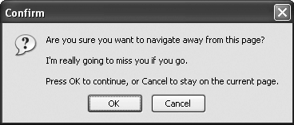
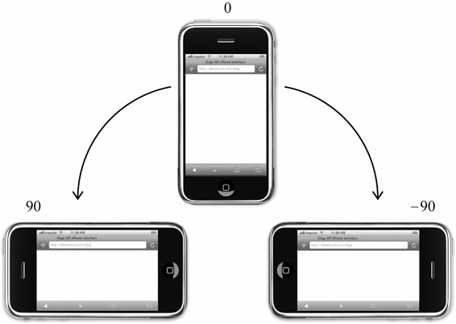
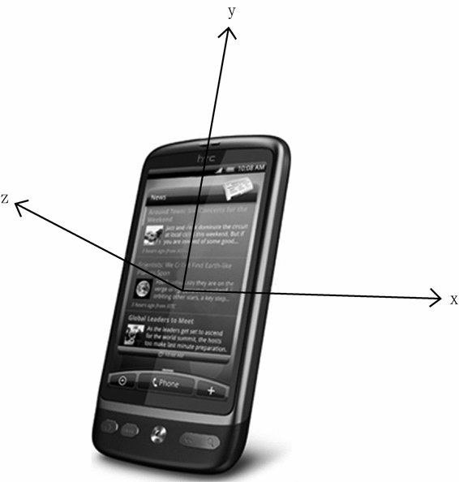
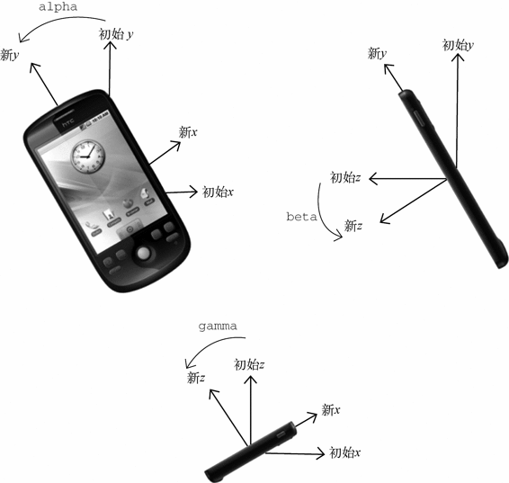

Web浏览器中可能发生的事件有很多类型。如前所述，不同的事件类型具有不同的信息，而“DOM3级事件”规定了以下几类事件。
UI（User Interface，用户界面）事件，当用户与页面上的元素交互时触发；
焦点事件，当元素获得或失去焦点时触发；
鼠标事件，当用户通过鼠标在页面上执行操作时触发；
滚轮事件，当使用鼠标滚轮（或类似设备）时触发；
文本事件，当在文档中输入文本时触发；
键盘事件，当用户通过键盘在页面上执行操作时触发；
合成事件，当为IME（Input Method Editor，输入法编辑器）输入字符时触发；
变动（mutation）事件，当底层DOM结构发生变化时触发。
变动名称事件，当元素或属性名变动时触发。此类事件已经被废弃，没有任何浏览器实现它们，因此本章不做介绍。
除了这几类事件之外，HTML5也定义了一组事件，而有些浏览器还会在DOM和BOM中实现其他专有事件。这些专有的事件一般都是根据开发人员需求定制的，没有什么规范，因此不同浏览器的实现有可能不一致。
DOM3级事件模块在DOM2级事件模块基础上重新定义了这些事件，也添加了一些新事件。包括IE9在内的所有主流浏览器都支持DOM2级事件。IE9也支持DOM3级事件。
UI事件事件指的是那些不一定与用户操作有关的事件。这些事件在DOM规范出现之前，都是以这种或那种形式存在的，而在DOM规范中保留是为了向后兼容。现有的UI事件如下。
DOMActivate：表示元素已经被用户操作（通过鼠标或键盘）激活。这个事件在DOM3级事件中被废弃，但Firefox 2+和Chrome支持它。考虑到不同浏览器实现的差异，不建议使用这个事件。
load：当页面完全加载后在window上面触发，当所有框架都加载完毕时在框架集上面触发，当图像加载完毕时在<img>元素上面触发，或者当嵌入的内容加载完毕时在<object>元素上面触发。
unload：当页面完全卸载后在window上面触发，当所有框架都卸载后在框架集上面触发，或者当嵌入的内容卸载完毕后在<object>元素上面触发。
abort：在用户停止下载过程时，如果嵌入的内容没有加载完，则在<object>元素上面触发。
error：当发生JavaScript错误时在window上面触发，当无法加载图像时在<img>元素上面触发，当无法加载嵌入内容时在<object>元素上面触发，或者当有一或多个框架无法加载时在框架集上面触发。第17章将继续讨论这个事件。
select：当用户选择文本框（<input>或<texterea>）中的一或多个字符时触发。第14章将继续讨论这个事件。
resize：当窗口或框架的大小变化时在window或框架上面触发。
scroll：当用户滚动带滚动条的元素中的内容时，在该元素上面触发。<body>元素中包含所加载页面的滚动条。
多数这些事件都与window对象或表单控件相关。
除了DOMActivate之外，其他事件在DOM2级事件中都归为HTML事件（DOMActivate在DOM2级中仍然属于UI事件）。要确定浏览器是否支持DOM2级事件规定的HTML事件，可以使用如下代码：
var isSupported = document.implementation.hasFeature("HTMLEvents", "2.0");
注意，只有根据“DOM2级事件”实现这些事件的浏览器才会返回true。而以非标准方式支持这些事件的浏览器则会返回false。要确定浏览器是否支持“DOM3级事件”定义的事件，可以使用如下代码：
var isSupported = document.implementation.hasFeature("UIEvent", "3.0");
1. load事件
JavaScript中最常用的一个事件就是load。当页面完全加载后（包括所有图像、JavaScript文件、CSS文件等外部资源），就会触发window上面的load事件。有两种定义onload事件处理程序的方式。第一种方式是使用如下所示的JavaScript代码：
EventUtil.addHandler(window, "load", function(event){
alert("Loaded!");
});
LoadEventExample01.htm
这是通过JavaScript来指定事件处理程序的方式，使用了本章前面定义的跨浏览器的EventUtil对象。与添加其他事件一样，这里也给事件处理程序传入了一个event对象。这个event对象中不包含有关这个事件的任何附加信息，但在兼容DOM的浏览器中，event.target属性的值会被设置为document，而IE并不会为这个事件设置srcElement属性。
第二种指定onload事件处理程序的方式是为<body>元素添加一个onload特性，如下面的例子所示：
<!DOCTYPE html>
<html>
<head>
<title>Load Event Example</title>
</head>
<body onload="alert('Loaded!')">
</body>
</html>
LoadEventExample02.htm
一般来说，在window上面发生的任何事件都可以在<body/>元素中通过相应的特性来指定，因为在HTML中无法访问window元素。实际上，这只是为了保证向后兼容的一种权宜之计，但所有浏览器都能很好地支持这种方式。我们建议读者尽可能使用JavaScript方式。
根据“DOM2级事件”规范，应该在
document而非window上面触发load事件。但是，所有浏览器都在window上面实现了该事件，以确保向后兼容。
图像上面也可以触发load事件，无论是在DOM中的图像元素还是HTML中的图像元素。因此，可以在HTML中为任何图像指定onload事件处理程序，例如：
<img src="smile.gif" onload="alert('Image loaded.')">
LoadEventExample03.htm
这样，当例子中的图像加载完毕后就会显示一个警告框。同样的功能也可以使用JavaScript来实现，例如：
var image = document.getElementById("myImage");
EventUtil.addHandler(image, "load", function(event){
event = EventUtil.getEvent(event);
alert(EventUtil.getTarget(event).src);
});
LoadEventExample04.htm
这里，使用JavaScript指定了onload事件处理程序。同时也传入了event对象，尽管它也不包含什么有用的信息。不过，事件的目标是<img>元素，因此可以通过src属性访问并显示该信息。
在创建新的<img>元素时，可以为其指定一个事件处理程序，以便图像加载完毕后给出提示。此时，最重要的是要在指定src属性之前先指定事件，如下面的例子所示。
EventUtil.addHandler(window, "load", function(){
var image = document.createElement("img");
EventUtil.addHandler(image, "load", function(event){
event = EventUtil.getEvent(event);
alert(EventUtil.getTarget(event).src);
});
document.body.appendChild(image);
image.src = "smile.gif";
});
LoadEventExample05.htm
在这个例子中，首先为window指定了onload事件处理程序。原因在于，我们是想向DOM中添加一个新元素，所以必须确定页面已经加载完毕——如果在页面加载前操作document.body会导致错误。然后，创建了一个新的图像元素，并设置了其onload事件处理程序。最后又将这个图像添加到页面中，还设置了它的src属性。这里有一点需要格外注意：新图像元素不一定要从添加到文档后才开始下载，只要设置了src属性就会开始下载。
同样的功能也可以通过使用DOM0级的Image对象实现。在DOM出现之前，开发人员经常使用Image对象在客户端预先加载图像。可以像使用<img>元素一样使用Image对象，只不过无法将其添加到DOM树中。下面来看一个例子。
EventUtil.addHandler(window, "load", function(){
var image = new Image();
EventUtil.addHandler(image, "load", function(event){
alert("Image loaded!");
});
image.src = "smile.gif";
});
LoadEventExample06.htm
在此，我们使用Image构造函数创建了一个新图像的实例，然后又为它指定了事件处理程序。有的浏览器将Image对象实现为<img>元素，但并非所有浏览器都如此，所以最好将它们区别对待。
在不属于DOM文档的图像（包括未添加到文档的
<img>元素和Image对象）上触发load事件时，IE8及之前版本不会生成event对象。IE9修复了这个问题。
还有一些元素也以非标准的方式支持load事件。在IE9+、Firefox、Opera、Chrome和Safari 3+及更高版本中，<script>元素也会触发load事件，以便开发人员确定动态加载的JavaScript文件是否加载完毕。与图像不同，只有在设置了<script>元素的src属性并将该元素添加到文档后，才会开始下载JavaScript文件。换句话说，对于<script>元素而言，指定src属性和指定事件处理程序的先后顺序就不重要了。以下代码展示了怎样为<script>元素指定事件处理程序。
EventUtil.addHandler(window, "load", function(){
var script = document.createElement("script");
EventUtil.addHandler(script, "load", function(event){
alert("Loaded");
});
script.src = "example.js";
document.body.appendChild(script);
});
LoadEventExample07.htm
这个例子使用了跨浏览器的EventUtil对象为新创建的<script>元素指定了onload事件处理程序。此时，大多数浏览器中event对象的target属性引用的都是<script>节点，而在Firefox 3之前的版本中，引用的则是document。IE8及更早版本不支持<script>元素上的load事件。
IE和Opera还支持<link>元素上的load事件，以便开发人员确定样式表是否加载完毕。例如：
EventUtil.addHandler(window, "load", function(){
var link = document.createElement("link");
link.type = "text/css";
link.rel= "stylesheet";
EventUtil.addHandler(link, "load", function(event){
alert("css loaded");
});
link.href = "example.css";
document.getElementsByTagName("head")[0].appendChild(link);
});
LoadEventExample07.htm
与<script>节点类似，在未指定href属性并将<link>元素添加到文档之前也不会开始下载样式表。
2. unload事件
与load事件对应的是unload事件，这个事件在文档被完全卸载后触发。只要用户从一个页面切换到另一个页面，就会发生unload事件。而利用这个事件最多的情况是清除引用，以避免内存泄漏。与load事件类似，也有两种指定onunload事件处理程序的方式。第一种方式是使用JavaScript，如下所示：
EventUtil.addHandler(window, "unload", function(event){
alert("Unloaded");
});
此时生成的event对象在兼容DOM的浏览器中只包含target属性（值为document）。IE8及之前版本则为这个事件对象提供了srcElement属性。
指定事件处理程序的第二种方式，也是为<body>元素添加一个特性（与load事件相似），如下面的例子所示：
<!DOCTYPE html>
<html>
<head>
<title>Unload Event Example</title>
</head>
<body onunload="alert('Unloaded!')">
</body>
</html>
UnloadEventExample01.htm
无论使用哪种方式，都要小心编写onunload事件处理程序中的代码。既然unload事件是在一切都被卸载之后才触发，那么在页面加载后存在的那些对象，此时就不一定存在了。此时，操作DOM节点或者元素的样式就会导致错误。
根据“DOM2级事件”，应该在
<body>元素而非window对象上面触发unload事件。不过，所有浏览器都在window上实现了unload事件，以确保向后兼容。
3. resize事件
当浏览器窗口被调整到一个新的高度或宽度时，就会触发resize事件。这个事件在window（窗口）上面触发，因此可以通过JavaScript或者<body>元素中的onresize特性来指定事件处理程序。如前所述，我们还是推荐使用如下所示的JavaScript方式：
EventUtil.addHandler(window, "resize", function(event){
alert("Resized");
});
与其他发生在window上的事件类似，在兼容DOM的浏览器中，传入事件处理程序中的event对象有一个target属性，值为document；而IE8及之前版本则未提供任何属性。
关于何时会触发resize事件，不同浏览器有不同的机制。IE、Safari、Chrome和Opera会在浏览器窗口变化了1像素时就触发resize事件，然后随着变化不断重复触发。Firefox则只会在用户停止调整窗口大小时才会触发resize事件。由于存在这个差别，应该注意不要在这个事件的处理程序中加入大计算量的代码，因为这些代码有可能被频繁执行，从而导致浏览器反应明显变慢。
浏览器窗口最小化或最大化时也会触发
resize事件。
4. scroll事件
虽然scroll事件是在window对象上发生的，但它实际表示的则是页面中相应元素的变化。在混杂模式下，可以通过<body>元素的scrollLeft和scrollTop来监控到这一变化；而在标准模式下，除Safari之外的所有浏览器都会通过<html>元素来反映这一变化（Safari仍然基于<body>跟踪滚动位置），如下面的例子所示：
EventUtil.addHandler(window, "scroll", function(event){
if (document.compatMode == "CSS1Compat"){
alert(document.documentElement.scrollTop);
} else {
alert(document.body.scrollTop);
}
});
ScrollEventExample01.htm
以上代码指定的事件处理程序会输出页面的垂直滚动位置——根据呈现模式不同使用了不同的元素。由于Safari 3.1之前的版本不支持document.compatMode，因此旧版本的浏览器就会满足第二个条件。
与resize事件类似，scroll事件也会在文档被滚动期间重复被触发，所以有必要尽量保持事件处理程序的代码简单。
焦点事件会在页面获得或失去焦点时触发。利用这些事件并与document.hasFocus()方法及document.activeElement属性配合，可以知晓用户在页面上的行踪。有以下6个焦点事件。
blur：在元素失去焦点时触发。这个事件不会冒泡；所有浏览器都支持它。
DOMFocusIn：在元素获得焦点时触发。这个事件与HTML事件focus等价，但它冒泡。只有Opera支持这个事件。DOM3级事件废弃了DOMFocusIn，选择了focusin。
DOMFocusOut：在元素失去焦点时触发。这个事件是HTML事件blur的通用版本。只有Opera支持这个事件。DOM3级事件废弃了DOMFocusOut，选择了focusout。
focus：在元素获得焦点时触发。这个事件不会冒泡；所有浏览器都支持它。
focusin：在元素获得焦点时触发。这个事件与HTML事件focus等价，但它冒泡。支持这个事件的浏览器有IE5.5+、Safari 5.1+、Opera 11.5+和Chrome。
focusout：在元素失去焦点时触发。这个事件是HTML事件blur的通用版本。支持这个事件的浏览器有IE5.5+、Safari 5.1+、Opera 11.5+和Chrome。
这一类事件中最主要的两个是focus和blur，它们都是JavaScript早期就得到所有浏览器支持的事件。这些事件的最大问题是它们不冒泡。因此，IE的focusin和focusout与Opera的DOMFocusIn和DOMFocusOut才会发生重叠。IE的方式最后被DOM3级事件采纳为标准方式。
当焦点从页面中的一个元素移动到另一个元素，会依次触发下列事件：
focusout在失去焦点的元素上触发；
focusin在获得焦点的元素上触发；
blur在失去焦点的元素上触发；
DOMFocusOut在失去焦点的元素上触发；
focus在获得焦点的元素上触发；
DOMFocusIn在获得焦点的元素上触发。
其中，blur、DOMFocusOut和focusout的事件目标是失去焦点的元素；而focus、DOMFocusIn和focusin的事件目标是获得焦点的元素。
要确定浏览器是否支持这些事件，可以使用如下代码：
var isSupported = document.implementation.hasFeature("FocusEvent", "3.0");
即使
focus和blur不冒泡，也可以在捕获阶段侦听到它们。Peter-Paul Koch就此写过一篇非常棒的文章：www.quirksmode.org/blog/archives/2008/04/delegating_the.html。
鼠标事件是Web开发中最常用的一类事件，毕竟鼠标还是最主要的定位设备。DOM3级事件中定义了9个鼠标事件，简介如下。
click：在用户单击主鼠标按钮（一般是左边的按钮）或者按下回车键时触发。这一点对确保易访问性很重要，意味着onclick事件处理程序既可以通过键盘也可以通过鼠标执行。
dblclick：在用户双击主鼠标按钮（一般是左边的按钮）时触发。从技术上说，这个事件并不是DOM2级事件规范中规定的，但鉴于它得到了广泛支持，所以DOM3级事件将其纳入了标准。
mousedown：在用户按下了任意鼠标按钮时触发。不能通过键盘触发这个事件。
mouseenter：在鼠标光标从元素外部首次移动到元素范围之内时触发。这个事件不冒泡，而且在光标移动到后代元素上不会触发。DOM2级事件并没有定义这个事件，但DOM3级事件将它纳入了规范。IE、Firefox 9+和Opera支持这个事件。
mouseleave：在位于元素上方的鼠标光标移动到元素范围之外时触发。这个事件不冒泡，而且在光标移动到后代元素上不会触发。DOM2级事件并没有定义这个事件，但DOM3级事件将它纳入了规范。IE、Firefox 9+和Opera支持这个事件。
mousemove：当鼠标指针在元素内部移动时重复地触发。不能通过键盘触发这个事件。
mouseout：在鼠标指针位于一个元素上方，然后用户将其移入另一个元素时触发。又移入的另一个元素可能位于前一个元素的外部，也可能是这个元素的子元素。不能通过键盘触发这个事件。
mouseover：在鼠标指针位于一个元素外部，然后用户将其首次移入另一个元素边界之内时触发。不能通过键盘触发这个事件。
mouseup：在用户释放鼠标按钮时触发。不能通过键盘触发这个事件。
页面上的所有元素都支持鼠标事件。除了mouseenter和mouseleave，所有鼠标事件都会冒泡，也可以被取消，而取消鼠标事件将会影响浏览器的默认行为。取消鼠标事件的默认行为还会影响其他事件，因为鼠标事件与其他事件是密不可分的关系。
只有在同一个元素上相继触发mousedown和mouseup事件，才会触发click事件；如果mousedown或mouseup中的一个被取消，就不会触发click事件。类似地，只有触发两次click事件，才会触发一次dblclick事件。如果有代码阻止了连续两次触发click事件（可能是直接取消click事件，也可能通过取消mousedown或mouseup间接实现），那么就不会触发dblclick事件了。这4个事件触发的顺序始终如下：
mousedown
mouseup
click
mousedown
mouseup
click
dblclick
显然，click和dblclick事件都会依赖于其他先行事件的触发；而mousedown和mouseup则不受其他事件的影响。
IE8及之前版本中的实现有一个小bug，因此在双击事件中，会跳过第二个mousedown和click事件，其顺序如下：
mousedown
mouseup
click
mouseup
dblclick
IE9修复了这个bug，之后顺序就正确了。
使用以下代码可以检测浏览器是否支持以上DOM2级事件（除dbclick、mouseenter和mouseleave之外）：
var isSupported = document.implementation.hasFeature("MouseEvents", "2.0");
要检测浏览器是否支持上面的所有事件，可以使用以下代码：
var isSupported = document.implementation.hasFeature("MouseEvent", "3.0")
注意，DOM3级事件的feature名是"MouseEvent"，而非"MouseEvents"。
鼠标事件中还有一类滚轮事件。而说是一类事件，其实就是一个mousewheel事件。这个事件跟踪鼠标滚轮，类似于Mac的触控板。
1. 客户区坐标位置
鼠标事件都是在浏览器视口中的特定位置上发生的。这个位置信息保存在事件对象的clientX和clientY属性中。所有浏览器都支持这两个属性，它们的值表示事件发生时鼠标指针在视口中的水平和垂直坐标。图13-4展示了视口中客户区坐标位置的含义。

图 13-4
可以使用类似下列代码取得鼠标事件的客户端坐标信息：
var div = document.getElementById("myDiv");
EventUtil.addHandler(div, "click", function(event){
event = EventUtil.getEvent(event);
alert("Client coordinates: " + event.clientX + "," + event.clientY);
});
ClientCoordinatesExample01.htm
这里为一个<div>元素指定了onclick事件处理程序。当用户单击这个元素时，就会看到事件的客户端坐标信息。注意，这些值中不包括页面滚动的距离，因此这个位置并不表示鼠标在页面上的位置。
2. 页面坐标位置
通过客户区坐标能够知道鼠标是在视口中什么位置发生的，而页面坐标通过事件对象的pageX和pageY属性，能告诉你事件是在页面中的什么位置发生的。换句话说，这两个属性表示鼠标光标在页面中的位置，因此坐标是从页面本身而非视口的左边和顶边计算的。
以下代码可以取得鼠标事件在页面中的坐标：
var div = document.getElementById("myDiv");
EventUtil.addHandler(div, "click", function(event){
event = EventUtil.getEvent(event);
alert("Page coordinates: " + event.pageX + "," + event.pageY);
});
PageCoordinatesExample01.htm
在页面没有滚动的情况下，pageX和pageY的值与clientX和clientY的值相等。
IE8及更早版本不支持事件对象上的页面坐标，不过使用客户区坐标和滚动信息可以计算出来。这时候需要用到document.body（混杂模式）或document.documentElement（标准模式）中的scrollLeft和scrollTop属性。计算过程如下所示：
var div = document.getElementById("myDiv");
EventUtil.addHandler(div, "click", function(event){
event = EventUtil.getEvent(event);
var pageX = event.pageX,
pageY = event.pageY;
if (pageX === undefined){
pageX = event.clientX + (document.body.scrollLeft ||
document.documentElement.scrollLeft);
}
if (pageY === undefined){
pageY = event.clientY + (document.body.scrollTop ||
document.documentElement.scrollTop);
}
alert("Page coordinates: " + pageX + "," + pageY);
});
PageCoordinatesExample01.htm
3. 屏幕坐标位置
鼠标事件发生时，不仅会有相对于浏览器窗口的位置，还有一个相对于整个电脑屏幕的位置。而通过screenX和screenY属性就可以确定鼠标事件发生时鼠标指针相对于整个屏幕的坐标信息。图13-5展示了浏览器中屏幕坐标的含义。

图 13-5
可以使用类似下面的代码取得鼠标事件的屏幕坐标：
var div = document.getElementById("myDiv");
EventUtil.addHandler(div, "click", function(event){
event = EventUtil.getEvent(event);
alert("Screen coordinates: " + event.screenX + "," + event.screenY);
});
ScreenCoordinatesExample01.htm
与前一个例子类似，这里也是为<div>元素指定了一个onclick事件处理程序。当这个元素被单击时，就会显示出事件的屏幕坐标信息了。
4. 修改键
虽然鼠标事件主要是使用鼠标来触发的，但在按下鼠标时键盘上的某些键的状态也可以影响到所要采取的操作。这些修改键就是Shift、Ctrl、Alt和Meta（在Windows键盘中是Windows键，在苹果机中是Cmd键），它们经常被用来修改鼠标事件的行为。DOM为此规定了4个属性，表示这些修改键的状态：shiftKey、ctrlKey、altKey和metaKey。这些属性中包含的都是布尔值，如果相应的键被按下了，则值为true，否则值为false。当某个鼠标事件发生时，通过检测这几个属性就可以确定用户是否同时按下了其中的键。来看下面的例子。
var div = document.getElementById("myDiv");
EventUtil.addHandler(div, "click", function(event){
event = EventUtil.getEvent(event);
var keys = new Array();
if (event.shiftKey){
keys.push("shift");
}
if (event.ctrlKey){
keys.push("ctrl");
}
if (event.altKey){
keys.push("alt");
}
if (event.metaKey){
keys.push("meta");
}
alert("Keys: " + keys.join(","));
});
ModifierKeysExample01.htm
在这个例子中，我们通过一个onclick事件处理程序检测了不同修改键的状态。数组keys中包含着被按下的修改键的名称。换句话说，如果有属性值为true，就会将对应修改键的名称添加到keys数组中。在事件处理程序的最后，有一个警告框将检测到的键的信息显示给用户。
IE9、Firefox、Safari、Chrome和Opera都支持这4个键。IE8及之前版本不支持
metaKey属性。
5. 相关元素
在发生mouseover和mouserout事件时，还会涉及更多的元素。这两个事件都会涉及把鼠标指针从一个元素的边界之内移动到另一个元素的边界之内。对mouseover事件而言，事件的主目标是获得光标的元素，而相关元素就是那个失去光标的元素。类似地，对mouseout事件而言，事件的主目标是失去光标的元素，而相关元素则是获得光标的元素。来看下面的例子。
<!DOCTYPE html>
<html>
<head>
<title>Related Elements Example</title>
</head>
<body>
<div id="myDiv" style="background-color:red;height:100px;width:100px;"></div>
</body>
</html>
RelatedElementsExample01.htm
这个例子会在页面上显示一个<div>元素。如果鼠标指针一开始位于这个<div>元素上，然后移出了这个元素，那么就会在<div>元素上触发mouseout事件，相关元素就是<body>元素。与此同时，<body>元素上面会触发mouseover事件，而相关元素变成了<div>。
DOM通过event对象的relatedTarget属性提供了相关元素的信息。这个属性只对于mouseover和mouseout事件才包含值；对于其他事件，这个属性的值是null。IE8及之前版本不支持relatedTarget属性，但提供了保存着同样信息的不同属性。在mouseover事件触发时，IE的fromElement属性中保存了相关元素；在mouseout事件触发时，IE的toElement属性中保存着相关元素。（IE9支持所有这些属性。）可以把下面这个跨浏览器取得相关元素的方法添加到EventUtil对象中。
var EventUtil = {
//省略了其他代码
getRelatedTarget: function(event){
if (event.relatedTarget){
return event.relatedTarget;
} else if (event.toElement){
return event.toElement;
} else if (event.fromElement){
return event.fromElement;
} else {
return null;
}
},
//省略了其他代码
};
EventUtil.js
与以前添加的跨浏览器方法一样，这个方法也使用了特性检测来确定返回哪个值。可以像下面这样使用EventUtil.getRelatedTarget()方法：
var div = document.getElementById("myDiv");
EventUtil.addHandler(div, "mouseout", function(event){
event = EventUtil.getEvent(event);
var target = EventUtil.getTarget(event);
var relatedTarget = EventUtil.getRelatedTarget(event);
alert("Moused out of " + target.tagName + " to " + relatedTarget.tagName);
});
RelatedElementsExample01.htm
这个例子为<div>元素的mouseout事件注册了一个事件处理程序。当事件触发时，会有一个警告框显示鼠标移出和移入的元素信息。
6. 鼠标按钮
只有在主鼠标按钮被单击（或键盘回车键被按下）时才会触发click事件，因此检测按钮的信息并不是必要的。但对于mousedown和mouseup事件来说，则在其event对象存在一个button属性，表示按下或释放的按钮。DOM的button属性可能有如下3个值：0表示主鼠标按钮，1表示中间的鼠标按钮（鼠标滚轮按钮），2表示次鼠标按钮。在常规的设置中，主鼠标按钮就是鼠标左键，而次鼠标按钮就是鼠标右键。
IE8及之前版本也提供了button属性，但这个属性的值与DOM的button属性有很大差异。
0：表示没有按下按钮。
1：表示按下了主鼠标按钮。
2：表示按下了次鼠标按钮。
3：表示同时按下了主、次鼠标按钮。
4：表示按下了中间的鼠标按钮。
5：表示同时按下了主鼠标按钮和中间的鼠标按钮。
6：表示同时按下了次鼠标按钮和中间的鼠标按钮。
7：表示同时按下了三个鼠标按钮。
不难想见，DOM模型下的button属性比IE模型下的button属性更简单也更为实用，因为同时按下多个鼠标按钮的情形十分罕见。最常见的做法就是将IE模型规范化为DOM方式，毕竟除IE8及更早版本之外的其他浏览器都原生支持DOM模型。而对主、中、次按钮的映射并不困难，只要将IE的其他选项分别转换成如同按下这三个按键中的一个即可（同时将主按钮作为优先选取的对象）。换句话说，IE中返回的5和7会被转换成DOM模型中的0。
由于单独使用能力检测无法确定差异（两种模型有同名的button属性），因此必须另辟蹊径。我们知道，支持DOM版鼠标事件的浏览器可以通过hasFeature()方法来检测，所以可以再为EventUtil对象添加如下getButton()方法。
var EventUtil = {
//省略了其他代码
getButton: function(event){
if (document.implementation.hasFeature("MouseEvents", "2.0")){
return event.button;
} else {
switch(event.button){
case 0:
case 1:
case 3:
case 5:
case 7:
return 0;
case 2:
case 6:
return 2;
case 4:
return 1;
}
}
},
//省略了其他代码
};
EventUtil.js
通过检测"MouseEvents"这个特性，就可以确定event对象中存在的button属性中是否包含正确的值。如果测试失败，说明是IE，就必须对相应的值进行规范化。以下是使用该方法的示例。
var div = document.getElementById("myDiv");
EventUtil.addHandler(div, "mousedown", function(event){
event = EventUtil.getEvent(event);
alert(EventUtil.getButton(event));
});
ButtonExample01.htm
在这个例子中，我们为一个<div>元素添加了一个onmousedown事件处理程序。当在这个元素上按下鼠标按钮时，会有警告框显示按钮的代码。
在使用
onmouseup事件处理程序时，button的值表示释放的是哪个按钮。此外，如果不是按下或释放了主鼠标按钮，Opera不会触发mouseup或mousedown事件。
7. 更多的事件信息
“DOM2级事件”规范在event对象中还提供了detail属性，用于给出有关事件的更多信息。对于鼠标事件来说，detail中包含了一个数值，表示在给定位置上发生了多少次单击。在同一个像素上相继地发生一次mousedown和一次mouseup事件算作一次单击。detail属性从1开始计数，每次单击发生后都会递增。如果鼠标在mousedown和mouseup之间移动了位置，则detail会被重置为0。
IE也通过下列属性为鼠标事件提供了更多信息。
altLeft：布尔值，表示是否按下了Alt键。如果altLeft的值为true，则altKey的值也为true。
ctrlLeft：布尔值，表示是否按下了Ctrl键。如果ctrlLeft的值为true，则ctrlKey的值也为true。
offsetX：光标相对于目标元素边界的x坐标。
offsetY：光标相对于目标元素边界的y坐标。
shiftLeft：布尔值，表示是否按下了Shift键。如果shiftLeft的值为true，则shiftKey的值也为true。
这些属性的用处并不大，原因一方面是只有IE支持它们，另一方是它们提供的信息要么没有什么价值，要么可以通过其他方式计算得来。
8. 鼠标滚轮事件
IE 6.0首先实现了mousewheel事件。此后，Opera、Chrome和Safari也都实现了这个事件。当用户通过鼠标滚轮与页面交互、在垂直方向上滚动页面时（无论向上还是向下），就会触发mousewheel事件。这个事件可以在任何元素上面触发，最终会冒泡到document（IE8）或window（IE9、Opera、Chrome及Safari）对象。与mousewheel事件对应的event对象除包含鼠标事件的所有标准信息外，还包含一个特殊的wheelDelta属性。当用户向前滚动鼠标滚轮时，wheelDelta是120的倍数；当用户向后滚动鼠标滚轮时，wheelDelta是-120的倍数。图13-6展示了这个属性。

图 13-6
将mousewheel事件处理程序指定给页面中的任何元素或document对象，即可处理鼠标滚轮的交互操作。来看下面的例子。
EventUtil.addHandler(document, "mousewheel", function(event){
event = EventUtil.getEvent(event);
alert(event.wheelDelta);
});
这个例子会在发生mousewheel事件时显示wheelDelta的值。多数情况下，只要知道鼠标滚轮滚动的方向就够了，而这通过检测wheelDelta的正负号就可以确定。
有一点要注意：在Opera 9.5之前的版本中，wheelDelta值的正负号是颠倒的。如果你打算支持早期的Opera版本，就需要使用浏览器检测技术来确定实际的值，如下面的例子所示。
EventUtil.addHandler(document, "mousewheel", function(event){
event = EventUtil.getEvent(event);
var delta = (client.engine.opera && client.engine.opera
-event.wheelDelta : event.wheelDelta);
alert(delta);
});
MouseWheelEventExample01.htm
以上代码使用第9章创建的client对象检测了浏览器是不是早期版本的Opera。
由于
mousewheel事件非常流行，而且所有浏览器都支持它，所以HTML 5也加入了该事件。
Firefox支持一个名为DOMMouseScroll的类似事件，也是在鼠标滚轮滚动时触发。与mousewheel事件一样，DOMMouseScroll也被视为鼠标事件，因而包含与鼠标事件有关的所有属性。而有关鼠标滚轮的信息则保存在detail属性中，当向前滚动鼠标滚轮时，这个属性的值是-3的倍数，当向后滚动鼠标滚轮时，这个属性的值是3的倍数。图13-7展示了这个属性。

图 13-7
可以将DOMMouseScroll事件添加到页面中的任何元素，而且该事件会冒泡到window对象。因此，可以像下面这样针对这个事件来添加事件处理程序。
EventUtil.addHandler(window, "DOMMouseScroll", function(event){
event = EventUtil.getEvent(event);
alert(event.detail);
});
DOMMouseScrollEventExample01.htm
这个简单的事件处理程序会在鼠标滚轮滚动时显示detail属性的值。
若要给出跨浏览器环境下的解决方案，第一步就是创建一个能够取得鼠标滚轮增量值（delta）的方法。下面是我们添加到EventUtil对象中的这个方法。
var EventUtil = {
//省略了其他代码
getWheelDelta: function(event){
if (event.wheelDelta){
return (client.engine.opera && client.engine.opera
-event.wheelDelta : event.wheelDelta);
} else {
return -event.detail * 40;
}
},
//省略了其他代码
};
EventUtil.js
这里，getWheelDelta()方法首先检测了事件对象是否包含wheelDelta属性，如果是则通过浏览器检测代码确定正确的值。如果wheelDelta不存在，则假设相应的值保存在detail属性中。由于Firefox的值有所不同，因此首先要将这个值的符号反向，然后再乘以40，就可以保证与其他浏览器的值相同了。有了这个方法之后，就可以将相同的事件处理程序指定给mousewheel和DOMMouseScroll事件了，例如：
(function(){
function handleMouseWheel(event){
event = EventUtil.getEvent(event);
var delta = EventUtil.getWheelDelta(event);
alert(delta);
}
EventUtil.addHandler(document, "mousewheel", handleMouseWheel);
EventUtil.addHandler(document, "DOMMouseScroll", handleMouseWheel);
})();
CrossBrowserMouseWheelExample01.htm
我们将相关代码放在了一个私有作用域中，从而不会让新定义的函数干扰全局作用域。这里定义的handleMouseWheel()函数可以用作两个事件的处理程序（如果指定的事件不存在，则为该事件指定处理程序的代码就会静默地失败）。由于使用了EventUtil.getWheelDelta()方法，我们定义的这个事件处理程序函数可以适用于任何一种情况。
9. 触摸设备
iOS和Android设备的实现非常特别，因为这些设备没有鼠标。在面向iPhone和iPod中的Safari开发时，要记住以下几点。
不支持dblclick事件。双击浏览器窗口会放大画面，而且没有办法改变该行为。
轻击可单击元素会触发mousemove事件。如果此操作会导致内容变化，将不再有其他事件发生；如果屏幕没有因此变化，那么会依次发生mousedown、mouseup和click事件。轻击不可单击的元素不会触发任何事件。可单击的元素是指那些单击可产生默认操作的元素（如链接），或者那些已经被指定了onclick事件处理程序的元素。
mousemove事件也会触发mouseover和mouseout事件。
两个手指放在屏幕上且页面随手指移动而滚动时会触发mousewheel和scroll事件。
10. 无障碍性问题
如果你的Web应用程序或网站要确保残疾人特别是那些使用屏幕阅读器的人都能访问，那么在使用鼠标事件时就要格外小心。前面提到过，可以通过键盘上的回车键来触发click事件，但其他鼠标事件却无法通过键盘来触发。为此，我们不建议使用click之外的其他鼠标事件来展示功能或引发代码执行。因为这样会给盲人或视障用户造成极大不便。以下是在使用鼠标事件时应当注意的几个易访问性问题。
使用click事件执行代码。有人指出通过onmousedown执行代码会让人觉得速度更快，对视力正常的人来说这是没错的。但是，在屏幕阅读器中，由于无法触发mousedown事件，结果就会造成代码无法执行。
不要使用onmouseover向用户显示新的选项。原因同上，屏幕阅读器无法触发这个事件。如果确实非要通过这种方式来显示新选项，可以考虑添加显示相同信息的键盘快捷方式。
不要使用dblclick执行重要的操作。键盘无法触发这个事件。
遵照以上提示可以极大地提升残疾人在访问你的Web应用程序或网站时的易访问性。
要了解如何在网页中实现无障碍访问的内容，请访问www.webaim.org和http://yaccessibilityblog.com/。
用户在使用键盘时会触发键盘事件。“DOM2级事件”最初规定了键盘事件，但在最终定稿之前又删除了相应的内容。结果，对键盘事件的支持主要遵循的是DOM0级。
“DOM3级事件”为键盘事件制定了规范，IE9率先完全实现了该规范。其他浏览器也在着手实现这一标准，但仍然有很多遗留的问题。
有3个键盘事件，简述如下。
keydown：当用户按下键盘上的任意键时触发，而且如果按住不放的话，会重复触发此事件。
keypress：当用户按下键盘上的字符键时触发，而且如果按住不放的话，会重复触发此事件。按下Esc键也会触发这个事件。Safari 3.1之前的版本也会在用户按下非字符键时触发keypress事件。
keyup：当用户释放键盘上的键时触发。
虽然所有元素都支持以上3个事件，但只有在用户通过文本框输入文本时才最常用到。
只有一个文本事件：textInput。这个事件是对keypress的补充，用意是在将文本显示给用户之前更容易拦截文本。在文本插入文本框之前会触发textInput事件。
在用户按了一下键盘上的字符键时，首先会触发keydown事件，然后紧跟着是keypress事件，最后会触发keyup事件。其中，keydown和keypress都是在文本框发生变化之前被触发的；而keyup事件则是在文本框已经发生变化之后被触发的。如果用户按下了一个字符键不放，就会重复触发keydown和keypress事件，直到用户松开该键为止。
如果用户按下的是一个非字符键，那么首先会触发keydown事件，然后就是keyup事件。如果按住这个非字符键不放，那么就会一直重复触发keydown事件，直到用户松开这个键，此时会触发keyup事件。
键盘事件与鼠标事件一样，都支持相同的修改键。而且，键盘事件的事件对象中也有
shiftKey、ctrlKey、altKey和metaKey属性。IE不支持metaKey。
1. 键码
在发生keydown和keyup事件时，event对象的keyCode属性中会包含一个代码，与键盘上一个特定的键对应。对数字字母字符键，keyCode属性的值与ASCII码中对应小写字母或数字的编码相同。因此，数字键7的keyCode值为55，而字母A键的keyCode值为65——与Shift键的状态无关。DOM和IE的event对象都支持keyCode属性。请看下面这个例子：
var textbox = document.getElementById("myText");
EventUtil.addHandler(textbox, "keyup", function(event){
event = EventUtil.getEvent(event);
alert(event.keyCode);
});
KeyUpEventExample01.htm
在这个例子中，用户每次在文本框中按键触发keyup事件时，都会显示keyCode的值。下表列出了所有非字符键的键码。
| 键 | 键 码 |
|---|---|
| 退格（Backspace） | 8 |
| 制表（Tab） | 9 |
| 回车（Enter） | 13 |
| 上档（Shift） | 16 |
| 控制（Ctrl） | 17 |
| Alt | 18 |
| 暂停/中断（Pause/Break） | 19 |
| 大写锁定（Caps Lock） | 20 |
| 退出（Esc） | 27 |
| 上翻页（Page Up） | 33 |
| 下翻页（Page Down） | 34 |
| 结尾（End） | 35 |
| 开头（Home） | 36 |
| 左箭头（Left Arrow） | 37 |
| 上箭头（Up Arrow） | 38 |
| 右箭头（Right Arrow） | 39 |
| 下箭头（Down Arrow） | 40 |
| 插入（Ins） | 45 |
| 删除（Del） | 46 |
| 左Windows键 | 91 |
| 右Windows键 | 92 |
| 上下文菜单键 | 93 |
| 数字小键盘0 | 96 |
| 数字小键盘1 | 97 |
| 数字小键盘2 | 98 |
| 数字小键盘3 | 99 |
| 数字小键盘4 | 100 |
| 数字小键盘5 | 101 |
| 数字小键盘6 | 102 |
| 数字小键盘7 | 103 |
| 数字小键盘8 | 104 |
| 数字小键盘9 | 105 |
| 数字小键盘+ | 107 |
| 数字小键盘及大键盘上的- | 109 |
| 数字小键盘 . | 110 |
| 数字小键盘 / | 111 |
| F1 | 112 |
| F2 | 113 |
| F3 | 114 |
| F4 | 115 |
| F5 | 116 |
| F6 | 117 |
| F7 | 118 |
| F8 | 119 |
| F9 | 120 |
| F10 | 121 |
| F11 | 122 |
| F12 | 123 |
| 数字锁（Num Lock） | 144 |
| 滚动锁（Scroll Lock） | 145 |
| 分号（IE/Safari/Chrome中） | 186 |
| 分号（Opera/FF中） | 59 |
| 小于 | 188 |
| 大于 | 190 |
| 正斜杠 | 191 |
| 沉音符（`） | 192 |
| 等于 | 61 |
| 左方括号 | 219 |
| 反斜杠（\） | 220 |
| 右方括号 | 221 |
| 单引号 | 222 |
无论keydown或keyup事件都会存在的一些特殊情况。在Firefox和Opera中，按分号键时keyCode值为59，也就是ASCII中分号的编码；但IE和Safari返回186，即键盘中按键的键码。
2. 字符编码
发生keypress事件意味着按下的键会影响到屏幕中文本的显示。在所有浏览器中，按下能够插入或删除字符的键都会触发keypress事件；按下其他键能否触发此事件因浏览器而异。由于截止到2008年，尚无浏览器实现“DOM3级事件”规范，所以浏览器之间的键盘事件并没有多大的差异。
IE9、Firefox、Chrome和Safari的event对象都支持一个charCode属性，这个属性只有在发生keypress事件时才包含值，而且这个值是按下的那个键所代表字符的ASCII编码。此时的keyCode通常等于0或者也可能等于所按键的键码。IE8及之前版本和Opera则是在keyCode中保存字符的ASCII编码。要想以跨浏览器的方式取得字符编码，必须首先检测charCode属性是否可用，如果不可用则使用keyCode，如下面的例子所示。
var EventUtil = {
//省略的代码
getCharCode: function(event){
if (typeof event.charCode == "number"){
return event.charCode;
} else {
return event.keyCode;
}
},
//省略的代码
};
EventUtil.js
这个方法首先检测charCode属性是否包含数值（在不支持这个属性的浏览器中，值为undefined），如果是，则返回该值。否则，就返回keyCode属性值。下面是使用这个方法的示例。
var textbox = document.getElementById("myText");
EventUtil.addHandler(textbox, "keypress", function(event){
event = EventUtil.getEvent(event);
alert(EventUtil.getCharCode(event));
});
KeyPressEventExample01.htm
在取得了字符编码之后，就可以使用String.fromCharCode()将其转换成实际的字符。
3. DOM3级变化
尽管所有浏览器都实现了某种形式的键盘事件，DOM3级事件还是做出了一些改变。比如，DOM3级事件中的键盘事件，不再包含charCode属性，而是包含两个新属性：key和char。
其中，key属性是为了取代keyCode而新增的，它的值是一个字符串。在按下某个字符键时，key的值就是相应的文本字符（如“k”或“M”）；在按下非字符键时，key的值是相应键的名（如“Shift”或“Down”）。而char属性在按下字符键时的行为与key相同，但在按下非字符键时值为null。
IE9支持key属性，但不支持char属性。Safari 5和Chrome支持名为keyIdentifier的属性，在按下非字符键（例如Shift）的情况下与key的值相同。对于字符键，keyIdentifier返回一个格式类似“U+0000”的字符串，表示Unicode值。
var textbox = document.getElementById("myText");
EventUtil.addHandler(textbox, "keypress", function(event){
event = EventUtil.getEvent(event);
var identifier = event.key || event.keyIdentifier;
if (identifier){
alert(identifi er);
}
});
DOMLevel3KeyPropertyExample01.htm
由于存在跨浏览器问题，因此本书不推荐使用key、keyIdentifier或char。
DOM3级事件还添加了一个名为location的属性，这是一个数值，表示按下了什么位置上的键：0表示默认键盘，1表示左侧位置（例如左位的Alt键），2表示右侧位置（例如右侧的Shift键），3表示数字小键盘，4表示移动设备键盘（也就是虚拟键盘），5表示手柄（如任天堂Wii控制器）。IE9支持这个属性。Safari和Chrome支持名为keyLocation的等价属性，但即有bug——值始终是0，除非按下了数字键盘（此时，值 为3）；否则，不会是1、2、4、5。
var textbox = document.getElementById("myText");
EventUtil.addHandler(textbox, "keypress", function(event){
event = EventUtil.getEvent(event);
var loc = event.location || event.keyLocation;
if (loc){
alert(loc);
}
});
DOMLevel3LocationPropertyExample01.htm
与key属性一样，支持location的浏览器也不多，所以在跨浏览器开发中不推荐使用。
最后是给event对象添加了getModifierState()方法。这个方法接收一个参数，即等于Shift、Control、AltGraph或Meta的字符串，表示要检测的修改键。如果指定的修改键是活动的（也就是处于被按下的状态），这个方法返回true，否则返回false。
var textbox = document.getElementById("myText");
EventUtil.addHandler(textbox, "keypress", function(event){
event = EventUtil.getEvent(event);
if (event.getModifierState){
alert(event.getModifierState("Shift"));
}
});
DOMLevel3LocationGetModifierStateExample01.htm
实际上，通过event对象的shiftKey、altKey、ctrlKey和metaKey属性已经可以取得类似的属性了。IE9是唯一支持getModifierState()方法的浏览器。
4. textInput事件
“DOM3级事件”规范中引入了一个新事件，名叫textInput。根据规范，当用户在可编辑区域中输入字符时，就会触发这个事件。这个用于替代keypress的textInput事件的行为稍有不同。区别之一就是任何可以获得焦点的元素都可以触发keypress事件，但只有可编辑区域才能触发textInput事件。区别之二是textInput事件只会在用户按下能够输入实际字符的键时才会被触发，而keypress事件则在按下那些能够影响文本显示的键时也会触发（例如退格键）。
由于textInput事件主要考虑的是字符，因此它的event对象中还包含一个data属性，这个属性的值就是用户输入的字符（而非字符编码）。换句话说，用户在没有按上档键的情况下按下了S键，data的值就是"s"，而如果在按住上档键时按下该键，data的值就是"S"。
以下是一个使用textInput事件的例子：
var textbox = document.getElementById("myText");
EventUtil.addHandler(textbox, "textInput", function(event){
event = EventUtil.getEvent(event);
alert(event.data);
});
TextInputEventExample01.htm
在这个例子中，插入到文本框中的字符会通过一个警告框显示出来。
另外，event对象上还有一个属性，叫inputMethod，表示把文本输入到文本框中的方式。
0，表示浏览器不确定是怎么输入的。
1，表示是使用键盘输入的。
2，表示文本是粘贴进来的。
3，表示文本是拖放进来的。
4，表示文本是使用IME输入的。
5，表示文本是通过在表单中选择某一项输入的。
6，表示文本是通过手写输入的（比如使用手写笔）。
7，表示文本是通过语音输入的。
8，表示文本是通过几种方法组合输入的。
9，表示文本是通过脚本输入的。
使用这个属性可以确定文本是如何输入到控件中的，从而可以验证其有效性。支持textInput属性的浏览器有IE9+、Safari和Chrome。只有IE支持inputMethod属性。
5. 设备中的键盘事件
任天堂Wii会在用户按下Wii遥控器上的按键时触发键盘事件。尽管没有办法访问Wii遥控器中的所有按键，但还是有一些键可以触发键盘事件。图13-6展示了一些键的键码，通过这些键码可以知道用户按下了哪个键。

图 13-8
当用户按下十字键盘（键码为175～178）、减号（170）、加号（174）、1（172）或2（173）键时就会触发键盘事件。但没有办法得知用户是否按下了电源开关、A、B或主页键。
iOS版Safari和Android版WebKit在使用屏幕键盘时会触发键盘事件。
复合事件（composition event）是DOM3级事件中新添加的一类事件，用于处理IME 的输入序列。IME（Input Method Editor，输入法编辑器）可以让用户输入在物理键盘上找不到的字符。例如，使用拉丁文键盘的用户通过IME照样能输入日文字符。IME通常需要同时按住多个键，但最终只输入一个字符。复合事件就是针对检测和处理这种输入而设计的。有以下三种复合事件。
compositionstart：在IME的文本复合系统打开时触发，表示要开始输入了。
compositionupdate：在向输入字段中插入新字符时触发。
compositionend：在IME的文本复合系统关闭时触发，表示返回正常键盘输入状态。
复合事件与文本事件在很多方面都很相似。在触发复合事件时，目标是接收文本的输入字段。但它比文本事件的事件对象多一个属性data，其中包含以下几个值中的一个：
如果在compositionstart事件发生时访问，包含正在编辑的文本（例如，已经选中的需要马上替换的文本）；
如果在compositionupdate事件发生时访问，包含正插入的新字符；
如果在compositionend事件发生时访问，包含此次输入会话中插入的所有字符。
与文本事件一样，必要时可以利用复合事件来筛选输入。可以像下面这样使用它们：
var textbox = document.getElementById("myText");
EventUtil.addHandler(textbox, "compositionstart", function(event){
event = EventUtil.getEvent(event);
alert(event.data);
});
EventUtil.addHandler(textbox, "compositionupdate", function(event){
event = EventUtil.getEvent(event);
alert(event.data);
});
EventUtil.addHandler(textbox, "compositionend", function(event){
event = EventUtil.getEvent(event);
alert(event.data);
});
CompositionEventsExample01.htm
IE9+是到2011年唯一支持复合事件的浏览器。由于缺少支持，对于需要开发跨浏览器应用的开发人员，它的用处不大。要确定浏览器是否支持复合事件，可以使用以下代码：
var isSupported = document.implementation.hasFeature("CompositionEvent", "3.0");
DOM2级的变动（mutation）事件能在DOM中的某一部分发生变化时给出提示。变动事件是为XML或HTML DOM设计的，并不特定于某种语言。DOM2级定义了如下变动事件。
DOMSubtreeModified：在DOM结构中发生任何变化时触发。这个事件在其他任何事件触发后都会触发。
DOMNodeInserted：在一个节点作为子节点被插入到另一个节点中时触发。
DOMNodeRemoved：在节点从其父节点中被移除时触发。
DOMNodeInsertedIntoDocument：在一个节点被直接插入文档或通过子树间接插入文档之后触发。这个事件在DOMNodeInserted之后触发。
DOMNodeRemovedFromDocument：在一个节点被直接从文档中移除或通过子树间接从文档中移除之前触发。这个事件在DOMNodeRemoved之后触发。
DOMAttrModified：在特性被修改之后触发。
DOMCharacterDataModified：在文本节点的值发生变化时触发。
使用下列代码可以检测出浏览器是否支持变动事件：
var isSupported = document.implementation.hasFeature("MutationEvents", "2.0");
IE8及更早版本不支持任何变动事件。下表列出了不同浏览器对不同变动事件的支持情况。
| 事 件 | Opera 9+ | Firefox 3+ | Safari 3+及Chrome | IE9+ |
|---|---|---|---|---|
DOMSubtreeModified |
－ | 支持 | 支持 | 支持 |
DOMNodeInserted |
支持 | 支持 | 支持 | 支持 |
DOMNodeRemoved |
支持 | 支持 | 支持 | 支持 |
由于DOM3级事件模块作废了很多变动事件，所以本节只介绍那些将来仍然会得到支持的事件。
1. 删除节点
在使用removeChild()或replaceChild()从DOM中删除节点时，首先会触发DOMNodeRemoved事件。这个事件的目标（event.target）是被删除的节点，而event.relatedNode属性中包含着对目标节点父节点的引用。在这个事件触发时，节点尚未从其父节点删除，因此其parentNode属性仍然指向父节点（与event.relatedNode相同）。这个事件会冒泡，因而可以在DOM的任何层次上面处理它。
如果被移除的节点包含子节点，那么在其所有子节点以及这个被移除的节点上会相继触发DOMNodeRemovedFromDocument事件。但这个事件不会冒泡，所以只有直接指定给其中一个子节点的事件处理程序才会被调用。这个事件的目标是相应的子节点或者那个被移除的节点，除此之外event对象中不包含其他信息。
紧随其后触发的是DOMSubtreeModified事件。这个事件的目标是被移除节点的父节点；此时的event对象也不会提供与事件相关的其他信息。
为了理解上述事件的触发过程，下面我们就以一个简单的HTML页面为例。
<! DOCTYPE html>
<html>
<head>
<title>Node Removal Events Example</title>
</head>
<body>
<ul id="myList">
<li>Item 1</li>
<li>Item 2</li>
<li>Item 3</li>
</ul>
</body>
</html>
在这个例子中，我们假设要移除<ul>元素。此时，就会依次触发以下事件。
在<ul>元素上触发DOMNodeRemoved事件。relatedNode属性等于document.body。
在<ul>元素上触发DOMNodeRemovedFromDocument事件。
在身为<ul>元素子节点的每个<li>元素及文本节点上触发DOMNodeRemovedFromDocument事件。
在document.body上触发DOMSubtreeModified事件，因为<ul>元素是document.body的直接子元素。
运行下列代码可以验证以上事件发生的顺序。
EventUtil.addHandler(window, "load", function(event){
var list = document.getElementById("myList");
EventUtil.addHandler(document, "DOMSubtreeModified", function(event){
alert(event.type);
alert(event.target);
});
EventUtil.addHandler(document, "DOMNodeRemoved", function(event){
alert(event.type);
alert(event.target);
alert(event.relatedNode);
});
EventUtil.addHandler(list.firstChild, "DOMNodeRemovedFromDocument", function(event){
alert(event.type);
alert(event.target);
});
list.parentNode.removeChild(list);
});
以上代码为document添加了针对DOMSubtreeModified和DOMNodeRemoved事件的处理程序，以便在页面上处理这些事件。由于DOMNodeRemovedFromDocument不会冒泡，所以我们将针对它的事件处理程序直接添加给了<ul>元素的第一个子节点（在兼容DOM的浏览器中是一个文本节点）。在设置了以上事件处理程序后，代码从文档中移除了<ul>元素。
2. 插入节点
在使用appendChild()、replaceChild()或insertBefore()向DOM中插入节点时，首先会触发DOMNodeInserted事件。这个事件的目标是被插入的节点，而event.relatedNode属性中包含一个对父节点的引用。在这个事件触发时，节点已经被插入到了新的父节点中。这个事件是冒泡的，因此可以在DOM的各个层次上处理它。
紧接着，会在新插入的节点上面触发DOMNodeInsertedIntoDocument事件。这个事件不冒泡，因此必须在插入节点之前为它添加这个事件处理程序。这个事件的目标是被插入的节点，除此之外event对象中不包含其他信息。
最后一个触发的事件是DOMSubtreeModified，触发于新插入节点的父节点。
我们仍以前面的HTML文档为例，可以通过下列JavaScript代码来验证上述事件的触发顺序。
EventUtil.addHandler(window, "load", function(event){
var list = document.getElementById("myList");
var item = document.createElement("li");
item.appendChild(document.createTextNode("Item 4"));
EventUtil.addHandler(document, "DOMSubtreeModified", function(event){
alert(event.type);
alert(event.target);
});
EventUtil.addHandler(document, "DOMNodeInserted", function(event){
alert(event.type);
alert(event.target);
alert(event.relatedNode);
});
EventUtil.addHandler(item, "DOMNodeInsertedIntoDocument", function(event){
alert(event.type);
alert(event.target);
});
list.appendChild(item);
});
以上代码首先创建了一个包含文本"Item 4"的新<li>元素。由于DOMSubtreeModified和DOMNodeInserted事件是冒泡的，所以把它们的事件处理程序添加到了文档中。在将列表项插入到其父节点之前，先将DOMNodeInsertedIntoDocument事件的事件处理程序添加给它。最后一步就是使用appendChild()来添加这个列表项；此时，事件开始依次被触发。首先是在新<li>元素项上触发DOMNodeInserted事件，其relatedNode是<ul>元素。然后是触发新<li>元素上的DOMNodeInsertedIntoDocument事件，最后触发的是<ul>元素上的DOMSubtreeModified事件。
DOM规范没有涵盖所有浏览器支持的所有事件。很多浏览器出于不同的目的——满足用户需求或解决特殊问题，还实现了一些自定义的事件。HTML5详尽列出了浏览器应该支持的所有事件。本节只讨论其中得到浏览器完善支持的事件，但并非全部事件。（其他事件会在本书其他章节讨论。）
1. contextmenu事件
Windows 95在PC中引入了上下文菜单的概念，即通过单击鼠标右键可以调出上下文菜单。不久，这个概念也被引入了Web领域。为了实现上下文菜单，开发人员面临的主要问题是如何确定应该显示上下文菜单（在Windows中，是右键单击；在Mac中，是Ctrl+单击），以及如何屏蔽与该操作关联的默认上下文菜单。为解决这个问题，就出现了contextmenu这个事件，用以表示何时应该显示上下文菜单，以便开发人员取消默认的上下文菜单而提供自定义的菜单。
由于contextmenu事件是冒泡的，因此可以为document指定一个事件处理程序，用以处理页面中发生的所有此类事件。这个事件的目标是发生用户操作的元素。在所有浏览器中都可以取消这个事件：在兼容DOM的浏览器中，使用event.preventDefalut()；在IE中，将event.returnValue的值设置为false。因为contextmenu事件属于鼠标事件，所以其事件对象中包含与光标位置有关的所有属性。通常使用contextmenu事件来显示自定义的上下文菜单，而使用onclick事件处理程序来隐藏该菜单。以下面的HTML页面为例。
<!DOCTYPE html>
<html>
<head>
<title>ContextMenu Event Example</title>
</head>
<body>
<div id="myDiv">Right click or Ctrl+click me to get a custom context menu.
Click anywhere else to get the default context menu.</div>
<ul id="myMenu" style="position:absolute;visibility:hidden;background-color:
silver">
<li><a href="http://www.nczonline.net">Nicholas’ site</a></li>
<li><a href="http://www.wrox.com">Wrox site</a></li>
<li><a href="http://www.yahoo.com">Yahoo!</a></li>
</ul>
</body>
</html>
ContextMenuEventExample01.htm
这里的<div>元素包含一个自定义的上下文菜单。其中，<ul>元素作为自定义上下文菜单，并且在初始时是隐藏的。实现这个例子的JavaScript代码如下所示。
EventUtil.addHandler(window, "load", function(event){
var div = document.getElementById("myDiv");
EventUtil.addHandler(div, "contextmenu", function(event){
event = EventUtil.getEvent(event);
EventUtil.preventDefault(event);
var menu = document.getElementById("myMenu");
menu.style.left = event.clientX + "px";
menu.style.top = event.clientY + "px";
menu.style.visibility = "visible";
});
EventUtil.addHandler(document, "click", function(event){
document.getElementById("myMenu").style.visibility = "hidden";
});
});
ContextMenuEventExample01.htm
在这个例子中，我们为<div>元素添加了oncontextmenu事件的处理程序。这个事件处理程序首先会取消默认行为，以保证不显示浏览器默认的上下文菜单。然后，再根据event对象clientX和clientY属性的值，来确定放置<ul>元素的位置。最后一步就是通过将visibility属性设置为"visible"来显示自定义上下文菜单。另外，还为document添加了一个onclick事件处理程序，以便用户能够通过鼠标单击来隐藏菜单（单击也是隐藏系统上下文菜单的默认操作）。
虽然这个例子很简单，但它却展示了Web上所有自定义上下文菜单的基本结构。只需为这个例子中的上下文菜单添加一些CSS样式，就可以得到非常棒的效果。
支持contextmenu事件的浏览器有IE、Firefox、Safari、Chrome和Opera 11+。
2.beforeunload事件
之所以有发生在window对象上的beforeunload事件，是为了让开发人员有可能在页面卸载前阻止这一操作。这个事件会在浏览器卸载页面之前触发，可以通过它来取消卸载并继续使用原有页面。但是，不能彻底取消这个事件，因为那就相当于让用户无法离开当前页面了。为此，这个事件的意图是将控制权交给用户。显示的消息会告知用户页面行将被卸载（正因为如此才会显示这个消息），询问用户是否真的要关闭页面，还是希望继续留下来（见图13-9）。

图 13-9
为了显示这个弹出对话框，必须将event.returnValue的值设置为要显示给用户的字符串（对IE及Fiefox而言），同时作为函数的值返回（对Safari和Chrome而言），如下面的例子所示。
EventUtil.addHandler(window, "beforeunload", function(event){
event = EventUtil.getEvent(event);
var message = "I'm really going to miss you if you go.";
event.returnValue = message;
return message;
});
BeforeUnloadEventExample01.htm
IE和Firefox、Safari和Chrome都支持beforeunload事件，也都会弹出这个对话框询问用户是否真想离开。Opera 11及之前的版本不支持beforeunload事件。
3. DOMContentLoaded事件
如前所述，window的load事件会在页面中的一切都加载完毕时触发，但这个过程可能会因为要加载的外部资源过多而颇费周折。而DOMContentLoaded事件则在形成完整的DOM树之后就会触发，不理会图像、JavaScript文件、CSS文件或其他资源是否已经下载完毕。与load事件不同，DOMContentLoaded支持在页面下载的早期添加事件处理程序，这也就意味着用户能够尽早地与页面进行交互。
要处理DOMContentLoaded事件，可以为document或window添加相应的事件处理程序（尽管这个事件会冒泡到window，但它的目标实际上是document）。来看下面的例子。
EventUtil.addHandler(document, "DOMContentLoaded", function(event){
alert("Content loaded");
});
DOMContentLoadedEventExample01.htm
DOMContentLoaded事件对象不会提供任何额外的信息（其target属性是document）。
IE9+、Firefox、Chrome、Safari 3.1+和Opera 9+都支持DOMContentLoaded事件，通常这个事件既可以添加事件处理程序，也可以执行其他DOM操作。这个事件始终都会在load事件之前触发。
对于不支持DOMContentLoaded的浏览器，我们建议在页面加载期间设置一个时间为0毫秒的超时调用，如下面的例子所示。
setTimeout(function(){
//在此添加事件处理程序
}, 0);
这段代码的实际意思就是：“在当前JavaScript处理完成后立即运行这个函数。”在页面下载和构建期间，只有一个JavaScript处理过程，因此超时调用会在该过程结束时立即触发。至于这个时间与DOMContentLoaded被触发的时间能否同步，主要还是取决于用户使用的浏览器和页面中的其他代码。为了确保这个方法有效，必须将其作为页面中的第一个超时调用；即便如此，也还是无法保证在所有环境中该超时调用一定会早于load事件被触发。
4. readystatechange事件
IE为DOM文档中的某些部分提供了readystatechange事件。这个事件的目的是提供与文档或元素的加载状态有关的信息，但这个事件的行为有时候也很难预料。支持readystatechange事件的每个对象都有一个readyState属性，可能包含下列5个值中的一个。
uninitialized（未初始化）：对象存在但尚未初始化。
loading（正在加载）：对象正在加载数据。
loaded（加载完毕）：对象加载数据完成。
interactive（交互）：可以操作对象了，但还没有完全加载。
complete（完成）：对象已经加载完毕。
这些状态看起来很直观，但并非所有对象都会经历readyState的这几个阶段。换句话说，如果某个阶段不适用某个对象，则该对象完全可能跳过该阶段；并没有规定哪个阶段适用于哪个对象。显然，这意味着readystatechange事件经常会少于4次，而readyState属性的值也不总是连续的。
对于document而言，值为"interactive"的readyState会在与DOMContentLoaded大致相同的时刻触发readystatechange事件。此时，DOM树已经加载完毕，可以安全地操作它了，因此就会进入交互（interactive）阶段。但与此同时，图像及其他外部文件不一定可用。下面来看一段处理readystatechange事件的代码。
EventUtil.addHandler(document, "readystatechange", function(event){
if (document.readyState == "interactive"){
alert("Content loaded");
}
});
这个事件的event对象不会提供任何信息，也没有目标对象。
在与load事件一起使用时，无法预测两个事件触发的先后顺序。在包含较多或较大的外部资源的页面中，会在load事件触发之前先进入交互阶段；而在包含较少或较小的外部资源的页面中，则很难说readystatechange事件会发生在load事件前面。
让问题变得更复杂的是，交互阶段可能会早于也可能会晚于完成阶段出现，无法确保顺序。在包含较多外部资源的页面中，交互阶段更有可能早于完成阶段出现；而在页面中包含较少外部资源的情况下，完成阶段先于交互阶段出现的可能性更大。因此，为了尽可能抢到先机，有必要同时检测交互和完成阶段，如下面的例子所示。
EventUtil.addHandler(document, "readystatechange", function(event){
if (document.readyState == "interactive" || document.readyState == "complete"){
EventUtil.removeHandler(document, "readystatechange", arguments.callee);
alert("Content loaded");
}
});
对于上面的代码来说，当readystatechange事件触发时，会检测document.readyState的值，看当前是否已经进入交互阶段或完成阶段。如果是，则移除相应的事件处理程序以免在其他阶段再执行。注意，由于事件处理程序使用的是匿名函数，因此这里使用了arguments.callee来引用该函数。然后，会显示一个警告框，说明内容已经加载完毕。这样编写代码可以达到与使用DOMContentLoaded十分相近的效果。
支持readystatechange事件的浏览器有IE、Firfox 4+和Opera。
虽然使用
readystatechange可以十分近似地模拟DOMContentLoaded事件，但它们本质上还是不同的。在不同页面中，load事件与readystatechange事件并不能保证以相同的顺序触发。
另外，<script>（在IE和Opera中）和<link>（仅IE中）元素也会触发readystatechange事件，可以用来确定外部的JavaScript和CSS文件是否已经加载完成。与在其他浏览器中一样，除非把动态创建的元素添加到页面中，否则浏览器不会开始下载外部资源。基于元素触发的readystatechange事件也存在同样的问题，即readyState属性无论等于"loaded"还是"complete"都可以表示资源已经可用。有时候，readyState会停在"loaded"阶段而永远不会“完成”；有时候，又会跳过"loaded"阶段而直接“完成”。于是，还需要像对待document一样采取相同的编码方式。例如，下面展示了一段加载外部JavaScript文件的代码。
EventUtil.addHandler(window, "load", function(){
var script = document.createElement("script");
EventUtil.addHandler(script, "readystatechange", function(event){
event = EventUtil.getEvent(event);
var target = EventUtil.getTarget(event);
if (target.readyState == "loaded" || target.readyState == "complete"){
EventUtil.removeHandler(target, "readystatechange", arguments. callee);
alert("Script Loaded");
}
});
script.src = "example.js";
document.body.appendChild(script);
});
ReadyStateChangeEventExample01.htm
这个例子为新创建的<script>节点指定了一个事件处理程序。事件的目标是该节点本身，因此当触发readystatechange事件时，要检测目标的readyState属性是不是等于"loaded"或"complete"。如果进入了其中任何一个阶段，则移除事件处理程序（以防止被执行两次），并显示一个警告框。与此同时，就可以执行已经加载完毕的外部文件中的函数了。
同样的编码方式也适用于通过<link>元素加载CSS文件的情况，如下面的例子所示。
EventUtil.addHandler(window, "load", function(){
var link = document.createElement("link");
link.type = "text/css";
link.rel= "stylesheet";
EventUtil.addHandler(script, "readystatechange", function(event){
event = EventUtil.getEvent(event);
var target = EventUtil.getTarget(event);
if (target.readyState == "loaded" || target.readyState == "complete"){
EventUtil.removeHandler(target, "readystatechange", arguments. callee);
alert("CSS Loaded");
}
});
link.href = "example.css";
document.getElementsByTagName("head")[0].appendChild(link);
});
ReadyStateChangeEventExample02.htm
同样，最重要的是要一并检测readyState的两个状态，并在调用了一次事件处理程序后就将其移除。
5. pageshow和pagehide事件
Firefox和Opera有一个特性，名叫“往返缓存”（back-forward cache，或bfcache），可以在用户使用浏览器的“后退”和“前进”按钮时加快页面的转换速度。这个缓存中不仅保存着页面数据，还保存了DOM和JavaScript的状态；实际上是将整个页面都保存在了内存里。如果页面位于bfcache中，那么再次打开该页面时就不会触发load事件。尽管由于内存中保存了整个页面的状态，不触发load事件也不应该会导致什么问题，但为了更形象地说明bfcache的行为，Firefox还是提供了一些新事件。
第一个事件就是pageshow，这个事件在页面显示时触发，无论该页面是否来自bfcache。在重新加载的页面中，pageshow会在load事件触发后触发；而对于bfcache中的页面，pageshow会在页面状态完全恢复的那一刻触发。另外要注意的是，虽然这个事件的目标是document，但必须将其事件处理程序添加到window。来看下面的例子。
(function(){
var showCount = 0;
EventUtil.addHandler(window, "load", function(){
alert("Load fired");
});
EventUtil.addHandler(window, "pageshow", function(){
showCount++;
alert("Show has been fired " + showCount + " times.");
});
})();
这个例子使用了私有作用域，以防止变量showCount进入全局作用域。当页面首次加载完成时，showCount的值为0。此后，每当触发pageshow事件，showCount的值就会递增并通过警告框显示出来。如果你在离开包含以上代码的页面之后，又单击“后退”按钮返回该页面，就会看到showCount每次递增的值。这是因为该变量的状态，乃至整个页面的状态，都被保存在了内存中，当你返回这个页面时，它们的状态得到了恢复。如果你单击了浏览器的“刷新”按钮，那么showCount的值就会被重置为0，因为页面已经完全重新加载了。
除了通常的属性之外，pageshow事件的event对象还包含一个名为persisted的布尔值属性。如果页面被保存在了bfcache中，则这个属性的值为true；否则，这个属性的值为false。可以像下面这样在事件处理程序中检测这个属性。
(function(){
var showCount = 0;
EventUtil.addHandler(window, "load", function(){
alert("Load fired");
});
EventUtil.addHandler(window, "pageshow", function(event){
showCount++;
alert("Show has been fired " + showCount +
" times. Persisted? " + event.persisted);
});
})();
PageShowEventExample01.htm
通过检测persisted属性，就可以根据页面在bfcache中的状态来确定是否需要采取其他操作。
与pageshow事件对应的是pagehide事件，该事件会在浏览器卸载页面的时候触发，而且是在unload事件之前触发。与pageshow事件一样，pagehide在document上面触发，但其事件处理程序必须要添加到window对象。这个事件的event对象也包含persisted属性，不过其用途稍有不同。来看下面的例子。
EventUtil.addHandler(window, "pagehide", function(event){
alert("Hiding. Persisted? " + event.persisted);
});
PageShowEventExample01.htm
有时候，可能需要在pagehide事件触发时根据persisted的值采取不同的操作。对于pageshow事件，如果页面是从bfcache中加载的，那么persisted的值就是true；对于pagehide事件，如果页面在卸载之后会被保存在bfcache中，那么persisted的值也会被设置为true。因此，当第一次触发pageshow时，persisted的值一定是false，而在第一次触发pagehide时，persisted就会变成true（除非页面不会被保存在bfcache中）。
支持pageshow和pagehide事件的浏览器有Firefox、Safari 5+、Chrome和Opera。IE9及之前版本不支持这两个事件。
指定了
onunload事件处理程序的页面会被自动排除在 bfcache之外，即使事件处理程序是空的。原因在于，onunload最常用于撤销在onload中所执行的操作，而跳过onload后再次显示页面很可能就会导致页面不正常。
6. hashchange事件
HTML5新增了haschange事件，以便在URL的参数列表（及URL中“#”号后面的所有字符串）发生变化时通知开发人员。之所以新增这个事件，是因为在Ajax应用中，开发人员经常要利用URL参数列来保存状态或导航信息。
必须要把hashchange事件处理程序添加给window对象，然后URL参数列表只要变化就会调用它。此时的event对象应该额外包含两个属性：oldURL和newURL。这两个属性分别保存着参数列表变化前后的完整URL。例如：
EventUtil.addHandler(window, "hashchange", function(event){
alert("Old URL: " + event.oldURL + "\nNew URL: " + event.newURL);
});
HashChangeEventExample01.htm
支持haschange事件的浏览器有IE8+、Firefox 3.6+、Safari 5+、Chrome和Opera 10.6+。在这些浏览器中，只有Firefox 6+、Chrome和Opera支持oldURL和newURL属性。为此，最好是使用location对象来确定当前的参数列表。
EventUtil.addHandler(window, "hashchange", function(event){
alert("Current hash: " + location.hash);
});
使用以下代码可以检测浏览器是否支持haschange事件：
var isSupported = ("onhashchange" in window); //这里有bug
如果IE8是在IE7文档模式下运行，即使功能无效它也会返回true。为解决这个问题，可以使用以下这个更稳妥的检测方式：
var isSupported = ("onhashchange" in window) && (document.documentMode ===
undefined || document.documentMode > 7);
智能手机和平板电脑的普及，为用户与浏览器交互引入了一种新的方式，而一类新事件也应运而生。设备事件（device event）可以让开发人员确定用户在怎样使用设备。W3C从2011年开始着手制定一份关于设备事件的新草案（http://dev.w3.org/geo/api/spec-source-orientation.html），以涵盖不断增长的设备类型并为它们定义相关的事件。本节会同时讨论这份草案中涉及的API和特定于浏览器开发商的事件。
1. orientationchange事件
苹果公司为移动Safari中添加了orientationchange事件，以便开发人员能够确定用户何时将设备由横向查看模式切换为纵向查看模式。移动Safari的window.orientation属性中可能包含3个值：0表示肖像模式，90表示向左旋转的横向模式（“主屏幕”按钮在右侧），-90表示向右旋转的横向模式（“主屏幕”按钮在左侧）。相关文档中还提到一个值，即180表示iPhone头朝下；但这种模式至今尚未得到支持。图13-10展示了window.orientation的每个值的含义。

图 13-10
只要用户改变了设备的查看模式，就会触发orientationchange事件。此时的event对象不包含任何有价值的信息，因为唯一相关的信息可以通过window.orientation访问到。下面是使用这个事件的典型示例。
EventUtil.addHandler(window, "load", function(event){
var div = document.getElementById("myDiv");
div.innerHTML = "Current orientation is " + window.orientation;
EventUtil.addHandler(window, "orientationchange", function(event){
div.innerHTML = "Current orientation is " + window.orientation;
});
});
OrientationChangeEventExample01.htm
在这个例子中，当触发load事件时会显示最初的方向信息。然后，添加了处理orientationchange事件的处理程序。只要发生这个事件，就会有表示新方向的信息更新页面中的消息。
所有iOS设备都支持orientationchange事件和window.orientation属性。
由于可以将
orientationchange看成window事件，所以也可以通过指定<body>元素的onorientationchange特性来指定事件处理程序。
2. MozOrientation事件
Firefox 3.6为检测设备的方向引入了一个名为MozOrientation的新事件。（前缀Moz表示这是特定于浏览器开发商的事件，不是标准事件。）当设备的加速计检测到设备方向改变时，就会触发这个事件。但这个事件与iOS中的orientationchange事件不同，该事件只能提供一个平面的方向变化。由于MozOrientation事件是在window对象上触发的，所以可以使用以下代码来处理。
EventUtil.addHandler(window, "MozOrientation", function(event){
//响应事件
});
此时的event对象包含三个属性：x、y和z。这几个属性的值都介于1到-1之间，表示不同坐标轴上的方向。在静止状态下，x值为0，y值为0，z值为1（表示设备处于竖直状态）。如果设备向右倾斜，x值会减小；反之，向左倾斜，x值会增大。类似地，如果设备向远离用户的方向倾斜，y值会减小，向接近用户的方向倾斜，y值会增大。z轴检测垂直加速度度，1表示静止不动，在设备移动时值会减小。（失重状态下值为0。）以下是输出这三个值的一个简单的例子。
EventUtil.addHandler(window, "MozOrientation", function(event){
var output = document.getElementById("output");
output.innerHTML = "X=" + event.x + ", Y=" + event.y + ", Z=" + event.z +"<br>";
});
MozOrientationEventExample01.htm
只有带加速计的设备才支持MozOrientation事件，包括Macbook、Lenovo Thinkpad、Windows Mobile和Android设备。请大家注意，这是一个实验性API，将来可能会变（可能会被其他事件取代）。
3. deviceorientation事件
本质上，DeviceOrientation Event规范定义的deviceorientation事件与MozOrientation事件类似。它也是在加速计检测到设备方向变化时在window对象上触发，而且具有与MozOrientation事件相同的支持限制。不过，deviceorientation事件的意图是告诉开发人员设备在空间中朝向哪儿，而不是如何移动。
设备在三维空间中是靠x、y和z轴来定位的。当设备静止放在水平表面上时，这三个值都是0。x轴方向是从左往右，y轴方向是从下往上，z轴方向是从后往前（参见图13-11）。

图 13-11
触发deviceorientation事件时，事件对象中包含着每个轴相对于设备静止状态下发生变化的信息。事件对象包含以下5个属性。
alpha：在围绕z轴旋转时（即左右旋转时），y轴的度数差；是一个介于0到360之间的浮点数。
beta：在围绕x轴旋转时（即前后旋转时），z轴的度数差；是一个介于?180到180之间的浮点数。
gamma：在围绕y轴旋转时（即扭转设备时），z轴的度数差；是一个介于?90到90之间的浮点数。
absolute：布尔值，表示设备是否返回一个绝对值。
compassCalibrated：布尔值，表示设备的指南针是否校准过。
图13-12是alpha、beta和gamma值含义的示意图。
下面是一个输出alpha、beta和gamma值的例子。
EventUtil.addHandler(window, "deviceorientation", function(event){
var output = document.getElementById("output");
output.innerHTML = "Alpha=" + event.alpha + ", Beta=" + event.beta +
", Gamma=" + event.gamma + "<br>";
});
DeviceOrientationEventExample01.htm
通过这些信息，可以响应设备的方向，重新排列或修改屏幕上的元素。要响应设备方向的改变而旋转元素，可以参考如下代码。
EventUtil.addHandler(window, "deviceorientation", function(event){
var arrow = document.getElementById("arrow");
arrow.style.webkitTransform = "rotate(" + Math.round(event.alpha) + "deg)";
});
DeviceOrientationEventExample01.htm

图 13-12
这个例子只能在移动WebKit浏览器中运行，因为它使用了专有的webkitTransform属性（即CSS标准属性transform的临时版）。元素“arrow”会随着event.alpha值的变化而旋转，给人一种指南针的感觉。为了保证旋转平滑，这里的CSS3变换使用了舍入之后的值。
到2011年，支持deviceorientation事件的浏览器有iOS 4.2+中的Safari、Chrome和Android版WebKit。
4. devicemotion事件
DeviceOrientation Event规范还定义了一个devicemotion事件。这个事件是要告诉开发人员设备什么时候移动，而不仅仅是设备方向如何改变。例如，通过devicemotion能够检测到设备是不是正在往下掉，或者是不是被走着的人拿在手里。
触发devicemotion事件时，事件对象包含以下属性。
acceleration：一个包含x、y和z属性的对象，在不考虑重力的情况下，告诉你在每个方向上的加速度。
accelerationIncludingGravity：一个包含x、y和z属性的对象，在考虑z轴自然重力加速度的情况下，告诉你在每个方向上的加速度。
interval：以毫秒表示的时间值，必须在另一个devicemotion事件触发前传入。这个值在每个事件中应该是一个常量。
rotationRate：一个包含表示方向的alpha、beta和gamma属性的对象。
如果读取不到acceleration、accelerationIncludingGravity和rotationRate值，则它们的值为null。因此，在使用这三个属性之前，应该先检测确定它们的值不是null。例如：
EventUtil.addHandler(window, "devicemotion", function(event){
var output = document.getElementById("output");
if (event.rotationRate !== null){
output.innerHTML += "Alpha=" + event.rotationRate.alpha + ", Beta=" +
event.rotationRate.beta + ", Gamma=" +
event.rotationRate.gamma;
}
});
DeviceMotionEventExample01.htm
与deviceorientation事件类似，只有iOS 4.2+中的Safari、Chrome和Android版WebKit实现了devicemotion事件。
iOS版Safari为了向开发人员传达一些特殊信息，新增了一些专有事件。因为iOS设备既没有鼠标也没有键盘，所以在为移动Safari开发交互性网页时，常规的鼠标和键盘事件根本不够用。随着Android中的WebKit的加入，很多这样的专有事件变成了事实标准，导致W3C开始制定Touch Events规范（参见https://dvcs.w3.org/hg/webevents/raw-file/tip/touchevents.html）。以下介绍的事件只针对触摸设备。
1. 触摸事件
包含iOS 2.0软件的iPhone 3G发布时，也包含了一个新版本的Safari浏览器。这款新的移动Safari提供了一些与触摸（touch）操作相关的新事件。后来，Android上的浏览器也实现了相同的事件。触摸事件会在用户手指放在屏幕上面时、在屏幕上滑动时或从屏幕上移开时触发。具体来说，有以下几个触摸事件。
touchstart：当手指触摸屏幕时触发；即使已经有一个手指放在了屏幕上也会触发。
touchmove：当手指在屏幕上滑动时连续地触发。在这个事件发生期间，调用preventDefault()可以阻止滚动。
touchend：当手指从屏幕上移开时触发。
touchcancel：当系统停止跟踪触摸时触发。关于此事件的确切触发时间，文档中没有明确说明。
上面这几个事件都会冒泡，也都可以取消。虽然这些触摸事件没有在DOM规范中定义，但它们却是以兼容DOM的方式实现的。因此，每个触摸事件的event对象都提供了在鼠标事件中常见的属性：bubbles、cancelable、view、clientX、clientY、screenX、screenY、detail、altKey、shiftKey、ctrlKey和metaKey。
除了常见的DOM属性外，触摸事件还包含下列三个用于跟踪触摸的属性。
touches：表示当前跟踪的触摸操作的Touch对象的数组。
targetTouchs：特定于事件目标的Touch对象的数组。
changeTouches：表示自上次触摸以来发生了什么改变的Touch对象的数组。
每个Touch对象包含下列属性。
clientX：触摸目标在视口中的x坐标。
clientY：触摸目标在视口中的y坐标。
identifier：标识触摸的唯一ID。
pageX：触摸目标在页面中的x坐标。
pageY：触摸目标在页面中的y坐标。
screenX：触摸目标在屏幕中的x坐标。
screenY：触摸目标在屏幕中的y坐标。
target：触摸的DOM节点目标。
使用这些属性可以跟踪用户对屏幕的触摸操作。来看下面的例子。
function handleTouchEvent(event){
//只跟踪一次触摸
if (event.touches.length == 1){
var output = document.getElementById("output");
switch(event.type){
case "touchstart":
output.innerHTML = "Touch started (" + event.touches[0].clientX +
"," + event.touches[0].clientY + ")";
break;
case "touchend":
output.innerHTML += "<br>Touch ended (" +
event.changedTouches[0].clientX + "," +
event.changedTouches[0].clientY + ")";
break;
case "touchmove":
event.preventDefault(); //阻止滚动
output.innerHTML += "<br>Touch moved (" +
event.changedTouches[0].clientX + "," +
event.changedTouches[0].clientY + ")";
break;
}
}
}
EventUtil.addHandler(document, "touchstart", handleTouchEvent);
EventUtil.addHandler(document, "touchend", handleTouchEvent);
EventUtil.addHandler(document, "touchmove", handleTouchEvent);
TouchEventsExample01.htm
以上代码会跟踪屏幕上发生的一次触摸操作。为简单起见，只会在有一次活动触摸操作的情况下输出信息。当touchstart事件发生时，会将触摸的位置信息输出到<div>元素中。当touchmove事件发生时，会取消其默认行为，阻止滚动（触摸移动的默认行为是滚动页面），然后输出触摸操作的变化信息。而touchend事件则会输出有关触摸操作的最终信息。注意，在touchend事件发生时，touches集合中就没有任何Touch对象了，因为不存在活动的触摸操作；此时，就必须转而使用changeTouchs集合。
这些事件会在文档的所有元素上面触发，因而可以分别操作页面的不同部分。在触摸屏幕上的元素时，这些事件（包括鼠标事件）发生的顺序如下：
touchstart
mouseover
mousemove（一次）
mousedown
mouseup
click
touchend
支持触摸事件的浏览器包括iOS版Safari、Android版WebKit、bada版Dolfin、OS6+中的BlackBerry WebKit、Opera Mobile 10.1+和LG专有OS中的Phantom浏览器。目前只有iOS版Safari支持多点触摸。桌面版Firefox 6+和Chrome也支持触摸事件。
2. 手势事件
iOS 2.0中的Safari还引入了一组手势事件。当两个手指触摸屏幕时就会产生手势，手势通常会改变显示项的大小，或者旋转显示项。有三个手势事件，分别介绍如下。
gesturestart：当一个手指已经按在屏幕上而另一个手指又触摸屏幕时触发。
gesturechange：当触摸屏幕的任何一个手指的位置发生变化时触发。
gestureend：当任何一个手指从屏幕上面移开时触发。
只有两个手指都触摸到事件的接收容器时才会触发这些事件。在一个元素上设置事件处理程序，意味着两个手指必须同时位于该元素的范围之内，才能触发手势事件（这个元素就是目标）。由于这些事件冒泡，所以将事件处理程序放在文档上也可以处理所有手势事件。此时，事件的目标就是两个手指都位于其范围内的那个元素。
触摸事件和手势事件之间存在某种关系。当一个手指放在屏幕上时，会触发touchstart事件。如果另一个手指又放在了屏幕上，则会先触发gesturestart事件，随后触发基于该手指的touchstart事件。如果一个或两个手指在屏幕上滑动，将会触发gesturechange事件。但只要有一个手指移开，就会触发gestureend事件，紧接着又会触发基于该手指的touchend事件。
与触摸事件一样，每个手势事件的event对象都包含着标准的鼠标事件属性：bubbles、cancelable、view、clientX、clientY、screenX、screenY、detail、altKey、shiftKey、ctrlKey和metaKey。此外，还包含两个额外的属性：rotation和scale。其中，rotation属性表示手指变化引起的旋转角度，负值表示逆时针旋转，正值表示顺时针旋转（该值从0开始）。而scale属性表示两个手指间距离的变化情况（例如向内收缩会缩短距离）；这个值从1开始，并随距离拉大而增长，随距离缩短而减小。
下面是使用手势事件的一个示例。
function handleGestureEvent(event){
var output = document.getElementById("output");
switch(event.type){
case "gesturestart":
output.innerHTML = "Gesture started (rotation=" + event.rotation +
",scale=" + event.scale + ")";
break;
case "gestureend":
output.innerHTML += "<br>Gesture ended (rotation=" + event.rotation +
",scale=" + event.scale + ")";
break;
case "gesturechange":
output.innerHTML += "<br>Gesture changed (rotation=" + event.rotation +
",scale=" + event.scale + ")";
break;
}
}
document.addEventListener("gesturestart", handleGestureEvent, false);
document.addEventListener("gestureend", handleGestureEvent, false);
document.addEventListener("gesturechange", handleGestureEvent, false);
GestureEventsExample01.htm
与前面演示触摸事件的例子一样，这里的代码只是将每个事件都关联到同一个函数中，然后通过该函数输出每个事件的相关信息。
触摸事件也会返回
rotation和scale属性，但这两个属性只会在两个手指与屏幕保持接触时才会发生变化。一般来说，使用基于两个手指的手势事件，要比管理触摸事件中的所有交互要容易得多。